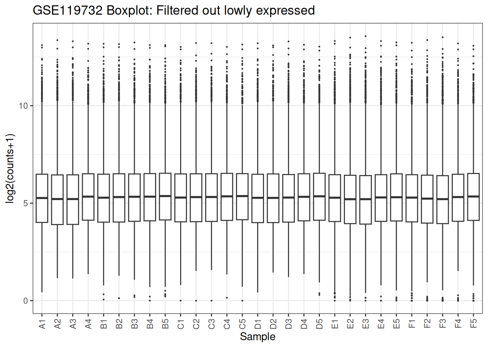
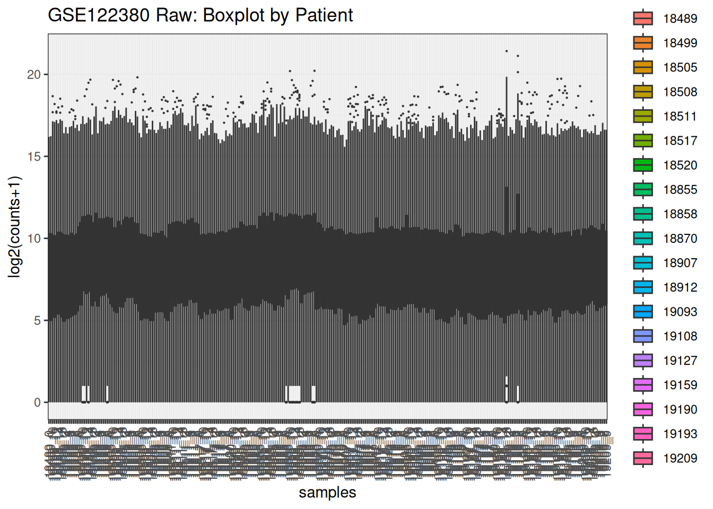
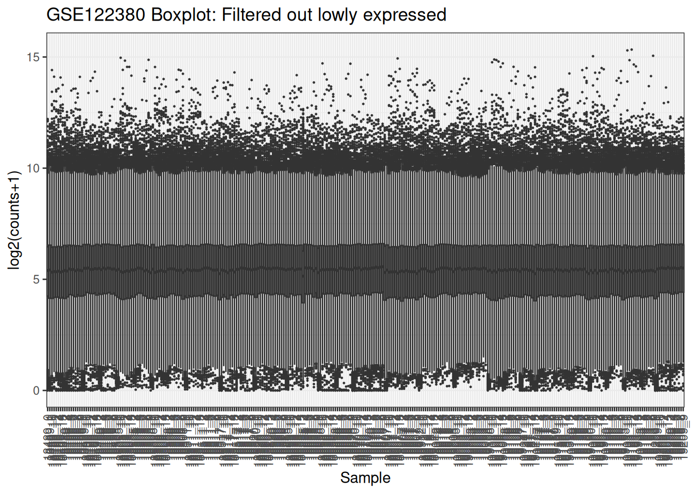

Chapter 6 Exercises
These are intended to be done after completing the worked examples.
6.1 Exercise 1 — https://www.ncbi.nlm.nih.gov/geo/query/acc.cgi?acc=GSE119732
Using GSE119732,
- Map the distribution of the samples as a box plot and a density plot using only the raw data.
- Add colours to the plot separating the different variables in the model
- Filter out lowly expressed genes and re plot the distributions.
6.1.1 Helper functions
##
## Attaching package: 'dplyr'## The following objects are masked from 'package:stats':
##
## filter, lag## The following objects are masked from 'package:base':
##
## intersect, setdiff, setequal, union## Loading required package: limmalibrary(ggplot2)
# Safe read files
safe_read <- function(file) {
# First attempt: read as TSV
df <- tryCatch(
readr::read_tsv(file, show_col_types = FALSE),
error = function(e) NULL # catch fatal errors
)
# If read_tsv failed entirely:
if (is.null(df)) {
message("TSV read failed — reading as space-delimited file instead.")
return(readr::read_table(file, show_col_types = FALSE))
}
# If read_tsv returned but with parsing issues:
probs <- problems(df)
if (nrow(probs) > 0) {
message("Parsing issues detected in TSV — reading as space-delimited file instead.")
return(readr::read_table(file, show_col_types = FALSE))
}
# If everything was fine:
return(df)
}
# Box Plot to support coloring by variable
plot_box_by_var <- function(mat, meta, fill_var, main = "") {
df_long <- as.data.frame(mat) %>%
mutate(gene = rownames(mat)) %>%
pivot_longer(-gene, names_to = "samples", values_to = "value") %>%
left_join(meta, by = "samples") %>%
mutate(value = log2(value + 1))
ggplot(df_long, aes(x = samples, y = value, fill = .data[[fill_var]])) +
geom_boxplot(outlier.size = 0.1) +
theme_bw() +
theme(axis.text.x = element_text(angle = 90, vjust = 0.5)) +
labs(title = main, y = "log2(counts+1)")
}
# Density Plot to support coloring by variable
plot_density_by_var <- function(mat, meta, color_var, main = "") {
df_long <- as.data.frame(mat) %>%
mutate(gene = rownames(mat)) %>%
pivot_longer(-gene, names_to = "samples", values_to = "value") %>%
left_join(meta, by = "samples") %>%
mutate(value = log2(value + 1))
ggplot(df_long, aes(x = value, color = .data[[color_var]], group = samples)) +
geom_density() +
theme_bw() +
labs(title = main, x = "log2(counts+1)")
}
# Load existing helper function
source("./supp_functions.R")6.1.2 Question 1

6.1.3 Question 2
6.1.3.1 Boxplot by patient
samples <- colnames(x)[2:ncol(x)]
patient <- substr(samples, 1, 1)
celltype <- substr(samples, 2, nchar(samples))
sample_data <- data.frame(samples, patient, celltype)
raw_mat <- as.matrix(x[,2:ncol(x)])
rownames(raw_mat) <- x[[1]]
# Generate the plots
plot_box_by_var(raw_mat, sample_data, "patient", main = "GSE119732 Raw: Boxplot by Patient")

6.1.4 Question 2
6.1.4.1 Boxplot with expression <3 removed
# Convert the raw counts to Counts per million
x_cpm <- cpm(y = x[,2:ncol(x)])
# remove low expression ones
to_remove <- edgeR::filterByExpr(x_cpm, min.count = 3)## No group or design set. Assuming all samples belong to one group.x_cpm_filtered <- x_cpm[to_remove,]
plot_box(x_cpm_filtered, main = "GSE119732 Boxplot: Filtered out lowly expressed")

6.2 Exercise 2 — https://www.ncbi.nlm.nih.gov/geo/query/acc.cgi?acc=GSE122380
Using GSE122380, confirm whether the ID column contains Ensembl IDs with version suffixes.
- Map the distribution of the samples as a box plot and a density plot using only the raw data.
- Add colours to the plot separating the different variables in the model
- Filter out lowly expressed genes and re plot the distributions.
6.2.1 Question 1
6.2.1.1 Check for version suffixes
## Setting options('download.file.method.GEOquery'='auto')## Setting options('GEOquery.inmemory.gpl'=FALSE)## Using locally cached version of supplementary file(s) GSE122380 found here:
## data/GSE122380/GSE122380_Supplementary_Data_Table_S1.xlsx## Using locally cached version of supplementary file(s) GSE122380 found here:
## data/GSE122380/GSE122380_raw_counts.txt.gzpath <- file.path("data", "GSE122380")
files <- list.files(path, pattern = "\\.txt.gz$|\\.tsv.gz$|\\.csv.gz$",
full.names = TRUE, recursive = TRUE)
x<- safe_read(files[1])## Warning: One or more parsing issues, call `problems()` on your data frame for details,
## e.g.:
## dat <- vroom(...)
## problems(dat)## Parsing issues detected in TSV — reading as space-delimited file instead.## Warning: Unknown or uninitialised column: `gene_id`.## [1] "Total number of IDs with version suffixes: 0"ID column does not contains Ensembl IDs with version suffixes.

6.2.2 Question 2
6.2.2.1 Boxplot by patient
samples <- colnames(x)[2:ncol(x)]
sample_data <- data.frame(samples = samples) %>%
mutate(
patient = sub("_.*", "", samples),
timepoint = sub(".*_", "", samples)
)
sample_data$timepoint <- factor(sample_data$timepoint,
levels = as.character(0:15))
raw_mat <- as.matrix(x[,2:ncol(x)])
rownames(raw_mat) <- x[[1]]
# Generate the plots
plot_box_by_var(raw_mat, sample_data, "patient", main = "GSE122380 Raw: Boxplot by Patient")

6.2.3 Question 2
6.2.3.1 Boxplot with expression <3 removed
# Convert the raw counts to Counts per million
x_cpm <- cpm(y = x[,2:ncol(x)])
# remove low expression ones
to_remove <- edgeR::filterByExpr(x_cpm, min.count = 3)## No group or design set. Assuming all samples belong to one group.x_cpm_filtered <- x_cpm[to_remove,]
plot_box(x_cpm_filtered, main = "GSE122380 Boxplot: Filtered out lowly expressed")